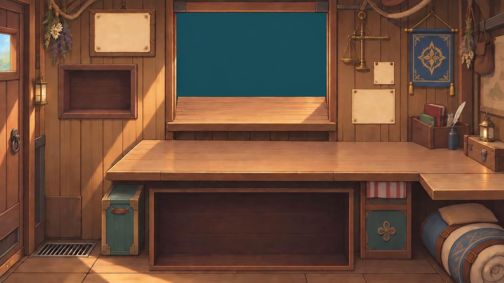
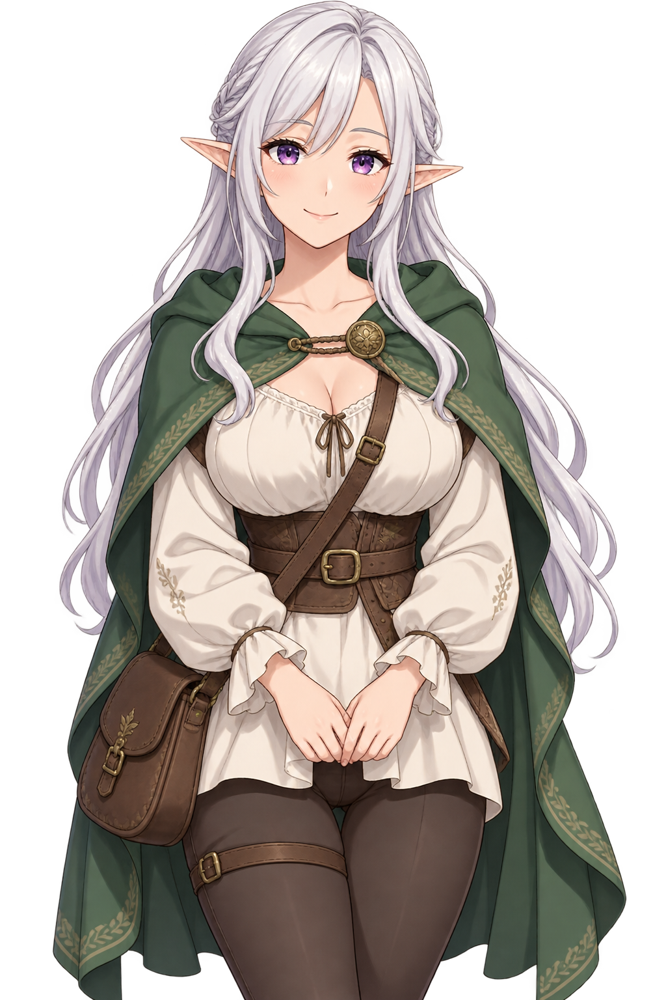

<!doctype html>
<html lang="zh-CN">
<meta charset="utf-8">
<meta name="viewport" content="width=device-width,initial-scale=1">
<title>已确认布局 · 分层美术</title>
<style>
  * { box-sizing: border-box; }
  body { max-width: 1280px; margin: 24px auto; padding: 0 16px; background: #15191c; color: #dae1e4; font: 14px system-ui; }
  header { display: flex; flex-wrap: wrap; gap: 24px; align-items: center; margin-bottom: 16px; }
  h1 { margin: 0; font-size: 18px; font-weight: 500; }
  label { display: flex; gap: 8px; }
  input { accent-color: #90b7c7; }
  .scene { position: relative; aspect-ratio: 1080 / 608; overflow: hidden; }
  .room, .town, .person { position: absolute; width: 100%; height: 100%; }
  .room { inset: 0; }
  .window { position: absolute; left: 35.09259%; top: 4.76974%; width: 29.72222%; height: 29.45249%; overflow: hidden; }
  .town { inset: 0; object-fit: cover; }
  .person { left: 26.47975%; top: 27.84462%; width: 52.02492%; height: 129.41447%; object-fit: contain; object-position: top; }
  .off { display: none; }
  footer { margin-top: 16px; color: #93a1a8; line-height: 1.8; }
  a { color: #a4d4df; }
</style>
<aside style="margin:16px 24px;padding:12px;border:1px solid #ff6b35">归档：早期布局与概念，不作为当前生成依据。当前实现见 <a href="整体视觉与UI规范.md">整体视觉与 UI 规范</a>。</aside>
<header>
  <h1>已确认布局 · 分层美术</h1>
  <label><input id="outside" type="checkbox" checked>窗外城市</label>
  <label><input id="person" type="checkbox" checked>顾客立绘</label>
</header>
<main>
  <div class="scene">
    
    <div class="window">
      
      
    </div>
  </div>
</main>
<footer>
  切换开关检查独立图层。桌板属于内景；商品、格子和交互控件由游戏绘制。<br>
  <a href="../../assets/approved-layout/interior-four-row-sill.png">查看完整背景原图</a>
</footer>
<script>
  document.querySelector('#outside').onchange = event => document.querySelector('.town').classList.toggle('off', !event.target.checked);
  document.querySelector('#person').onchange = event => document.querySelector('.person').classList.toggle('off', !event.target.checked);
</script>
</html>
